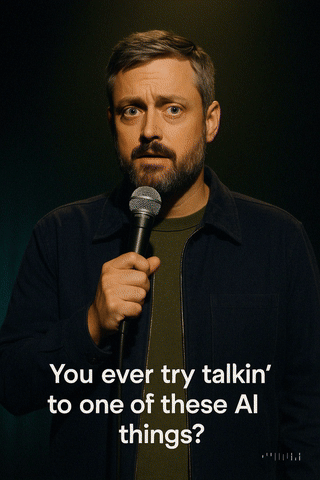
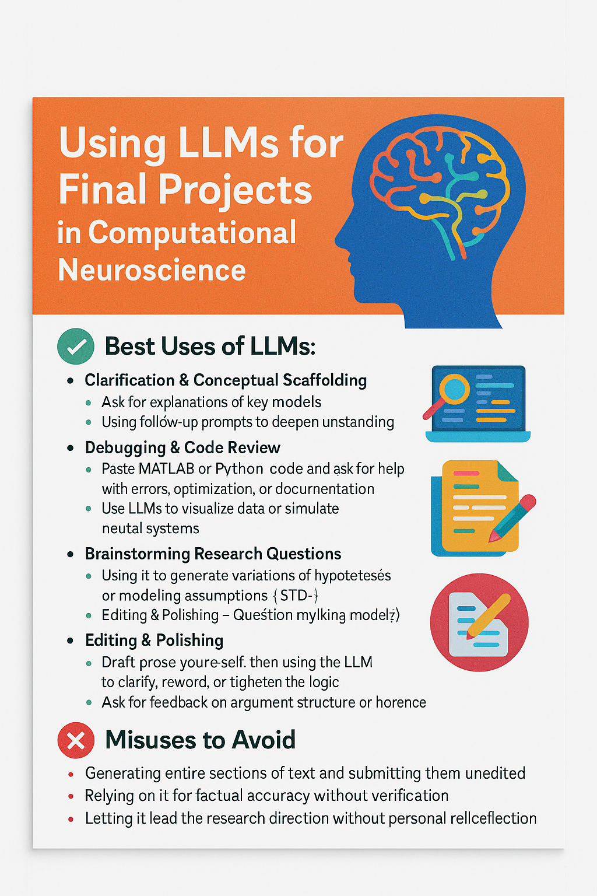

Post · Apr 24, 2025
Notes from class Thursday, April 24
In Computational Neuroscience today, we learned about good old-fashioned AI (GOFAI) and how it compares to modern LLM-based generative AI, through a conversation with ChatGPT (see link below).
https://chatgpt.com/share/680a8feb-0c38-8007-b8f9-4c22e38c2520
Have a good weekend.
--Greg

